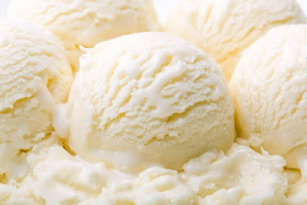

Oatmeal

Description
It is for summer!
And maybe for winter, just in case you are living in Southern Hemisphere.
Ingredients
- 500 ml milk
- Two tablespoons of starch
- 200 gr cream
- Four tablespoons of sugar
- One tablespoon of vanilla
Steps
- Mix all the ingredients.
- Stir and cook on medium heat until it reaches pudding consistency.
- If you want it with cocoa, add two dessert spoons of cocoa after it cools down.
- Put it in the freezer, mix it a few times in a couple of hours so that it does not freeze.